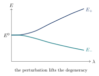
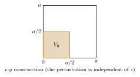

Download this chapter (PDF) Full notes (PDF)
27 Time-Independent Perturbation Theory: Degenerate Case¶
27.1 Two-Fold Degeneracy¶
If the unperturbed states are degenerate, the non-degenerate formulas fail because of the vanishing denominators \(E_n^0-E_m^0\). Take a 2-fold degenerate level:
Any combination is also an eigenstate of \(\hat H^0\) with the same energy:
The perturbation breaks the degeneracy: as it is switched on, the single level splits into two (figure below). The zeroth-order state that the perturbed state tends to is a particular combination (\(\alpha,\beta\) fixed by \(\hat H'\)), which the theory must determine.

The \(\lambda^1\) equation is
Take the inner product with \(\langle\psi_a^0|\). By Hermiticity \(\langle\psi_a^0|\hat H^0|\psi^1\rangle = E^0\langle\psi_a^0|\psi^1\rangle\), which cancels, leaving
Taking the inner product with \(\langle\psi_b^0|\) instead:
Define the matrix elements of the perturbation inside the degenerate subspace:
Then (I) and (II) read
A nontrivial solution \((\alpha,\beta)\) exists only if the determinant vanishes:
Secular Equation (Two-Fold Degeneracy)
Using \(W_{ab} = W_{ba}^*\) this is \((E^1)^2 - (W_{aa}+W_{bb})E^1 + W_{aa}W_{bb} - |W_{ab}|^2 = 0\), with roots
Study Note
The discriminant is non-negative, so both roots are real, and they are distinct unless \(W_{aa}=W_{bb}\) and \(W_{ab}=0\) (then the degeneracy survives at first order). If \(W_{ab}=0\) the roots are simply \(W_{aa}\) and \(W_{bb}\), and \(|\psi_a^0\rangle,|\psi_b^0\rangle\) are already the “good” states. In general the ratio is fixed by \(\beta/\alpha = (E^1_\pm - W_{aa})/W_{ab}\).
Intuition
Degenerate perturbation theory says: inside the degenerate subspace, diagonalize the perturbation. The eigenvalues are the first-order energy shifts, the eigenvectors are the correct zeroth-order states.
27.2 \(n\)-Fold Degeneracy¶
For an \(n\)-fold degenerate level write \(|\psi^0\rangle = c_1|\psi_1^0\rangle + \cdots + c_n|\psi_n^0\rangle\). The same steps give the eigenvalue problem for the \(W\)-matrix, \(W_{ij} = \langle\psi_i^0|\hat H'|\psi_j^0\rangle\):
\(W\)-Matrix Equation
The \(n\) roots of \(\det(W - E^1\mathbb{1}) = 0\) are the first-order shifts; each eigenvector gives the corresponding good zeroth-order state.
Exam Tip
Procedure: (1) list the degenerate states, (2) compute all \(W_{ij}\), (3) write the \(W\)-matrix, (4) solve \(\det(W-E^1)=0\), (5) quote \(E = E^0 + E^1\). Use \(\operatorname{tr}W=\sum E^1_i\) as a check.
27.3 Example: Infinite Cubic Well¶
Example: 3D Infinite Cubic Well with a Perturbation
The perturbation is

Example: 3D Infinite Cubic Well (continued): Ground State and First Excited Level
Ground state \(E_0^0 = E^0_{111} = \dfrac{3\pi^2\hbar^2}{2ma^2}\) is non-degenerate:
This is the correction to the ground-state energy.
First excited level: \((n_x,n_y,n_z) = (1,2,1),(2,1,1),(1,1,2)\), 3-fold degenerate with \(E_1^0 = E^0_{121} = \dfrac{3\pi^2\hbar^2}{ma^2}\). Write
and build \(W_{ij}=\langle\psi^0_i|\hat H'|\psi^0_j\rangle=\int d^3r\,\psi_i^{0*}\hat H'\psi_j^0\). The result is \(W_{11}=W_{22}=W_{33}=\tfrac14V_0\) and a single non-zero off-diagonal pair \(W_{23}=W_{32}=\dfrac{16}{9\pi^2}V_0\), so
Example: 3D Infinite Cubic Well (completed solution)
Study Note (ordering of the states)
The notebook lists the states in the order \(121,\,211,\,112\) and then states \(W_{12}=W_{13}=0\), \(W_{23}=\frac{16}{9\pi^2}V_0\). That statement matches the matrix above only if the decoupled state (\(112\)) is labelled first. With the order \(121,211,112\) the correct elements are \(W_{12}\neq 0\) and \(W_{13}=W_{23}=0\). The matrix, eigenvalues and conclusions are unchanged; the ordering \(112,121,211\) is used here.
Complete Solution
Diagonal elements, for example \(|112\rangle\):
and in the same way \(W_{22}=W_{33}=V_0/4\) (over \([0,a/2]\) both \(\sin^2(\pi u/a)\) and \(\sin^2(2\pi u/a)\) integrate to \(a/4\)).
Off-diagonal elements. \(W_{12}=\langle 112|\hat H'|121\rangle\) contains \(\int_0^a\sin\frac{2\pi z}{a}\sin\frac{\pi z}{a}\,dz=0\) (orthogonality), so \(W_{12}=W_{13}=0\). For \(W_{23}=\langle121|\hat H'|211\rangle\) the \(z\)-integral is \(\int_0^a\sin^2\frac{\pi z}{a}dz = \frac a2\), and with \(\sin A\sin 2A = 2\sin^2A\cos A\):
The \(y\)-integral is the same. Therefore
Eigenvalues: \(\big(\tfrac14V_0-E^1\big)\Big[\big(\tfrac14V_0-E^1\big)^2 - \big(\tfrac{16}{9\pi^2}V_0\big)^2\Big]=0\), hence
Good zeroth-order states: \(|112\rangle\) for \(E^1=\frac14V_0\), and \(\frac1{\sqrt2}\big(|121\rangle \pm |211\rangle\big)\) for \(E^1 = \frac14V_0 \pm \frac{16}{9\pi^2}V_0\). The three-fold degeneracy is completely lifted:
Verification
\(\operatorname{tr}W = \frac34V_0 = \frac14V_0 + \big(\frac14+\frac{16}{9\pi^2}\big)V_0 + \big(\frac14-\frac{16}{9\pi^2}\big)V_0\).
Intuition
\(\hat H'\) is symmetric under \(x\leftrightarrow y\), so the symmetric and antisymmetric combinations of \(|121\rangle,|211\rangle\) are the natural good states, while \(|112\rangle\) (which is itself symmetric and has a different \(z\)-dependence) decouples.
27.4 Good States and Commuting Operators¶
Theorem: Good States from a Commuting Operator
Let \(\hat A\) be a Hermitian operator that commutes with \(\hat H^0\) and with \(\hat H'\). If \(|\psi_a^0\rangle\) and \(|\psi_b^0\rangle\) (the degenerate eigenfunctions of \(\hat H^0\)) are also eigenfunctions of \(\hat A\) with distinct eigenvalues, then
Proof: Let \(\hat A|\psi_a^0\rangle = \mu|\psi_a^0\rangle\), \(\hat A|\psi_b^0\rangle = \nu|\psi_b^0\rangle\), \(\mu\ne\nu\), and \([\hat A,\hat H']=0\). Then
and since \(\mu\ne\nu\), \(\langle\psi_a^0|\hat H'|\psi_b^0\rangle = 0\). ∎
In that case the energies are simply \(E^1_+ = \langle\psi_a^0|\hat H'|\psi_a^0\rangle\) and \(E^1_- = \langle\psi_b^0|\hat H'|\psi_b^0\rangle\) (no matrix diagonalization needed).
Memory Rule
Look for an operator that commutes with both \(\hat H^0\) and \(\hat H'\) (a symmetry of the full problem) and label the degenerate states by its eigenvalues. For hydrogen with spin-orbit coupling these are \(\hat J^2,\hat J_z\), not \(\hat L_z,\hat S_z\) (see Section 28).
Common mistakes
\(a\) using the non-degenerate formula \(E^{(2)}\) when two levels coincide, (b) forgetting that off-diagonal \(W_{ij}\) matter even when the diagonal ones are equal, (c) taking the basis states themselves as good states without checking \(W_{ab}=0\), (d) dropping the factor \(E_n^0-E_m^0\) order (it is \(n\) first).
See also: Griffiths, Introduction to Quantum Mechanics (3rd ed.), section 7.2.3
If the square root in the secular equation vanishes, the degeneracy is not lifted at first order, and diagonalizing \(W\) puts no restriction on \(\alpha,\beta\). The good states must then be found from the next order; Griffiths takes up this case in section 7.2.3 and Problem 7.40.